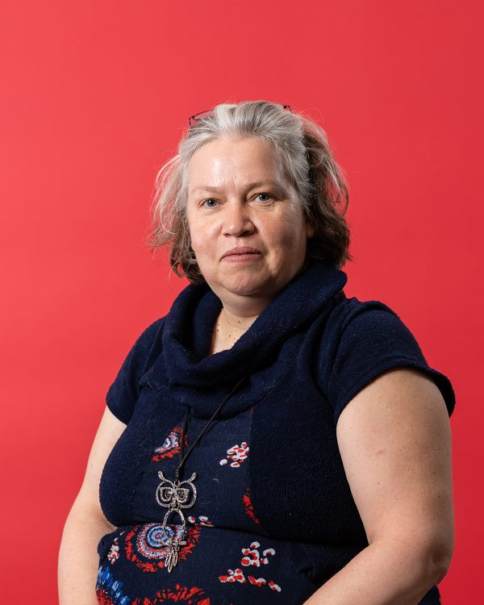

Des artistes passionnés qui animent des cours de niveau débutant à avancé.


Aussi dans l’équipe : Jean-Claude Larouche (art numérique) · Catherine Charron-Drolet · Louise Daigle · Viviane Gruais · Lise Martel · Ginette Mayrand · Nathali Ruel · Martine Simard (peinture) · Jasmine Lacerte · Josée Leblanc Deschênes · Aline Massé (dessin) · Louise Dionne · Lorraine Lévesque · Lori Menzies · Marie-Andrée Michaud · Clément Montmigny (verre)
Artiste verrière autodidacte depuis près de 20 ans, elle travaille le vitrail Tiffany et la baguette de plomb à son atelier personnel.
Cours : Bijoux, fusion et thermoformage, mosaïque et vitrail — mercredi ou jeudi 13 h 30 / jeudi 19 h
Voir la fiche